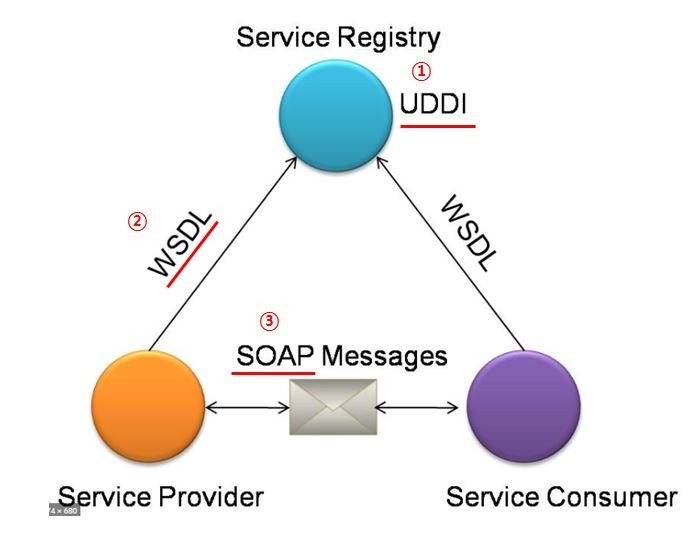

예상 기출 문제
1. 웹 서비스(Web Service)는 네트워크에 분산된 정보를 서비스 형태로 개방하여 표준화된 방식으로 공유하는 기술로써 서비스 지향 아키텍처(SOA) 개념을 실현하는 대표적인 기술이다. 아래 웹 서비스 구성도에서 밑줄 친 ①, ②, ③의 용어를 약술하시오.

정답 :
① UDDI ( Universal Description, Discovery, and Integration )
- 웹 서비스에 대한 정보인 WSDL을 등록하고 검색하기 위한 저장소로 공개적으로 접근, 검색이 가능한 레지스트리이다.
- 기업이나 단체, 개인이 자신들의 서비스 내용을 인터넷 상에 등록할 수 있게하는 XLML 기반의 등록처이다. 이 등록처에 WSDL을 사용하여 수행한다.
② WSDL ( Web Services Description Language )
- 웹 서비스명, 제공 위치, 메시지 포맷, 프로토콜 정보 등 웹 서비스에 대한 상세 정보가 기술된 XML 형식으로 구현되어 있는 언어이다.
- 어떤 등록처나 저장소에 자료를 저장하려면 어떤 자료가 어디에 어떤 형식으로 저장되는지 알아야 사용이 가능한데 이런 특정 서비스의 설명과 접근 방법과 같은 전자적으로 접근하는 방법을 XML언어 기반으로 제공하는 기술이다.
③ SOAP ( Simple Object Access Protocol )
- HTTP, HTTPS, SMTP 등을 사용하여 XML 기반의 메시지를 네트워크 상태에서 교환하는 프로토콜이다.
- 웹 상에 연결된 컴퓨터 속에 있는 각 객체들을 액세스 하기 위한 MS 사의 프로토콜인데 HTTP로 XML 구문을 사용하여 COM, DCOM, 자바 등이 수행될 수 있다.
해설 :
* 웹서비스
- 웹이라는 네트워크 환경에 연결된 서로 다른 컴퓨터들이 동적으로 서로 연결되어 소통하고 실행될 수 있도록 하는 동적 환경 구현을 위한 소프트웨어 컴포넌트 묶음
* 웹 서비스 묶음에는
- 단순 객체 접근 프로토콜(SOAP),
- 웹 서비스 기술 언어(WSDL),
- 전역 비즈니스 레지스트리(UDDI) 등의 표준 기술을 사용하는데 네트워크에 연결된 다른 컴퓨터 간의 분산 컴퓨팅을 지원하는 소프트웨어 및 기술들이다.
* 저장소로 UDDI를 사용하고, 저장소에 접근과 그 저장된 자료의 접근 형식을 적은 설명서 WSDL과 이 자료를 꺼내서 가져가는 실행 프로토콜인 SOAP로 구성되고 여기에는 XML이 사용된다.
2. 아래는 사용자 인터페이스(UI) 설계 기본 원칙에 대한 설명이다. 괄호 ( ) 안에 들어갈 설계 기본 원칙을 쓰시오.
- ( ① ): 누구나 쉽게 이해하고, 쉽게 사용할 수 있어야 함
- ( ② ): 정확하고 완벽하게 사용자의 목표가 달성될 수 있도록 제작
- ( ③ ): 초보와 숙련자 모두가 쉽게 배우고 사용할 수 있게 제작
- ( ④ ): 사용자의 인터랙션을 최대한 포용하고, 실수를 방지할 수 있도록 제작
정답 : ① 직관성 ② 유효성 ③ 학습성 ④ 유연성
3. 다음 중 ① ~③ 의 설명에 해당하는 보안 약점을 [보기]에서 찾아서 쓰시오.
① SQL 삽입 공격, 크로스 사이트 스크립트(XSS) 공격을 유발할 수 있는 보안 약점
② 인증, 권한 관리, 암호화, 중요정보 처리를 부적절하게 구현 시 발생할 수 있는 보안 약점
③ 잘못된 세션에 의한 정보 노출, 제거되지 않은 디버그 코드, 시스템 정보 노출 등으로 발생할 수 있는 보안 약점
[보기]
ㄱ. 캡슐화 보안 약점
ㄴ. 입력데이터 검증 및 표현의 보안 약점
ㄷ. 보안 기능에 대한 보안 약점
ㄹ. 시간 및 상태 보안 약점
ㅁ. 에러 처리 보안 약점
정답 : ① ㄴ ② ㄷ ③ ㄱ
4. 다음이 설명하는 테스트 레벨의 종류는 무엇인가?
- 사용자 요구사항에 대한 단위 모듈, 서브루틴 등을 테스트하는 단계
- 인터페이스 테스트, 자료구조 테스트, 실행 경로 테스트, 오류 처리 테스트가 존재
정답 : 단위테스트
해설 :
* 테스트 레벨 : 한 번에 총체적으로 조직화하고 관리하는 테스트 활동의 묶음
- 단위 테스트, 통합테스트, 시스템 테스트, 인수 테스트
* 단위 테스트(Unit Test)
- 코딩 직후 SW 설계의 최소 단위인 모듈이나 컴포넌트에 초점을 맞춰 테스트 진행
- 사용자 요구사항을 기반으로 한 기능성 테스트 최우선
- 주로 구조기반(화이트박스 테스트) 시행
* 통합 테스트
- 시스템이나 시스템 구성 요소 또는 소프트웨어 프로그램의 데이터 및 기능의 인터페이스(흐름)가 정상적으로 작동하는지에 중점을 둠
- 단위 테스트를 통과한 개발 소프트웨어/하드웨어 컴포넌트 간 인터페이스 및 연동 기능 등을 구조적으로 접근하여 테스트
>> 빅뱅 통합 테스트 : 모든 모듈을 한꺼번에 통합하고 결합 격리가 어려움
>> 상향식 통합 : 가장 하부의 모듈부터 통합해가면서 상부로 올라감, 드라이브가 필요
>> 하향식 통합 : 가장 상부의 모듈부터 통합해가면서 하부로 내려감, 스텁 필요
>> 백본 통합 : 소프트웨어 리스크가 높은 것을 우선적으로 통합하고 접근, 드라이버, 스텁은 필요에 따라 만들어서 사용
* 시스템 테스트
- 실제 환경과 가능한 유사한 환경에서 진행
- 기능적 요구사항(명세기반 기법), 비기능적 요구사항(구조기반 기법)
- 개발 조직과는 독립된 테스트 조직에서 수행되어야 하며 사전 요구사항이 명확해야 한다
- 단위, 통합 테스트가 가능한 완벽히 완료되어 가능상에 문제가 없는 상태여야 한다
5. SW 개발 보안의 3대 요소 중 ① ~③에 알맞는 용어를 쓰시오.
① 인가되지 않은 개인 혹은 시스템 접근에 따라 정보의 노출을 차단하는 특성
② 서비스가 계속 유지가 되어 인가된 대상에게 정보를 제공하는 것으로 시스템이 장애 없이 정상적으로 운영되는 능력
③ 시스템 내의 정보는 오직 인가된 사용자만 수정할 수 있음
정답 : ① 기밀성 ② 가용성 ③ 무결성
6. 다음은 릴리즈 노트 작성 프로세스이다. 올바르게 나열하시오.
① 릴리즈 정보 확인 ② 릴리즈 노트 개요 작성
③ 모듈 식별 ④ 정식 릴리즈 노트 작성
⑤ 영향도 체크 ⑥ 추가 개선 항목 식별
정답 : ③ → ① → ② → ⑤ → ④ → ⑥
7. 다음과 같은 특징을 갖는 데이터베이스 종류는 무엇인지 쓰시오.
• 데이터를 상하 종속적인 관계로 계층화하여 관리하는 데이터베이스이다.
• 데이터에 대한 접근 속도가 빠르지만, 종속적인 구조로 인하여 변화하는 데이터 구조에 유연하게 대응하기가 쉽지 않다.
정답 : 계층형 데이터베이스 관리시스템(HDBMS; Hierarchical Database Management System)
8. 다음은 요구사항 개발 프로세스이다. 올바르게 나열하시오.
① 요구사항 분석(Analysis) ② 요구사항 확인(Validation) ③ 요구사항 명세(Specification) ④ 요구사항 도출(Elicitation)
정답 : 도출 > 분석 > 명세 > 확인
9. 다음은 연계 방식 중 간접 연계 방식의 기술에 대한 설명이다. 알맞은 기술을 쓰시오.
- 기업에서 운영되는 서로 다른 플랫폼 및 애플리케이션들 간의 정보 전달, 연계, 통합을 가능하게 해주는 솔루션
- 송수신 시스템에 설치되는 어댑터를 사용
정답 : 연계 솔루션(EAI)
10. 다음이 설명하는 용어를 쓰시오.
• 모듈의 독립성을 나타내는 개념으로, 모듈 내부 구성요소 간 연관 정도이다.
• 정보은닉 개념의 확장개념으로, 하나의 모듈은 하나의 기능을 수행하는 것을 의미한다.
• 유형으로는 우연적, 논리적, 시간적, ..., 기능적 ( )이/가 있다.
정답 : 응집도
* 응집도 순서 (낮음 > 높음)
- 우연 > 논리 > 시간 > 절차 > 통신 > 순차 > 기능적
11. <보기>에 나열된 응집도를 응집도가 낮은 순서부터 높은 순서로 차례대로 서술하시오
<보기>
Functional / Communication / Procedural / Coincidental / Temporal / Logical / Sequential
정답 :
Coincidental(Cohesion)(우연적) → Logical(논리적) → Temporal(시간적) → Procedural(절차적) → Communication(통신적) → Sequential(순차적) → Functional(기능적)
12. 모듈 내부가 아닌 외부의 모듈과의 연관도 또는 모듈 간의 상호의존성으로 소프트웨어 구조에서 모듈 간의 관련성을 측정하는 척도를 이르는 말은?
13. 다음 결합도 유형을 높은 것부터 낮은 순으로 서술하고 괄호 ( )안에 들어갈 가장 올바른 용어를 쓰시오.
Data Coupling / Common Coupling / Control Coupling / Stamp Coupling / External Coupling / Content Coupling
- ( ① ) 결합도 : 한 모듈이 다른 모듈 내부에 있는 변수나 기능을 직접 참조하거나 사용하는 경우의 결합도이다.
- ( ② ) 결합도 : 모듈 간의 인터페이스로 배열이나 객체, 구조 등이 전달될 때의 결합도이다.
- ( ③ ) 결합도 : 단순 처리할 대상인 값만 전달되는 것이 아니라 어떤 모듈이 다른 모듈 내부의 논리적인 흐름을 제어하기 위해서 어떻게 처리를 해야 한다는 ( ③ ) 요소까지 전달하는 결합도이다.
정답 : Content > Common > External > Control > Stamp > Data ① 내용 ② 스탬프 ③ 제어
내용 > 공통 > 외부 > 제어 > 스탬프 > 자료
14. 다음이 설명하는 라우팅 프로토콜은 무엇인가?
• 최초의 라우팅 프로토콜
• 거리 벡터 알고리즘 활용
• 30초 주기로 전체 라우팅 정보 갱신
• 변화 업데이트 시 많은 시간 소요
• 라우팅 루프 발생 가능
정답 : RIP
15. 다음이 설명하는 네트워크 장비는 무엇인가?
• 프로토콜을 서로 다른 통신망에 접속할 수 있게 해주는 장치
• LAN에서 다른 네트워크에 데이터를 보내거나 다른 네트워크로부터 데이터를 받아들이는 출입구 역할
정답 : 게이트웨이
16. 다음이 설명하는 패키징 도구 암호화 기술은 무엇인가?
• 공개키 암호 방식 기반으로 디지털 인증서를 활용하는 소프트웨어, 하드웨어, 사용자, 정책 및 제도 등을 총칭하는 암호기술
• 공개키 알고리즘을 통한 암호화 및 전자서명을 제공하기 위한 복합적인 보안 시스템 환경
• 암호화와 복호화키로 구성된 공개키를 이용해 송수신 데이터를 암호화하고 디지털 인증서를 통해 사용자를 인증하는 시스템
정답 : 공개키 기반 구조(PKI)
17. 다음이 설명하는 용어를 쓰시오.
( ① ) : 기업이 재해/재난으로부터 타격을 입은 뒤 업무를 어떻게 복구하는지에 대한 계획을 말한다.
( ① ) : 전산의 단순복구 뿐 아니라 고객 비즈니스의 지속성을 보장한다.
( ① ) : 재해 복구를 포함하는 더 넓은 개념으로 쓰인다.
( ② ) : 재해복구시간목표이다. 재해로 인하여 서비스가 중단되었을 때 서비스를 복구하는데 걸리는 최대 허용시간이다.
( ③ ) : 재해복구시점목표이다. 재해로 인하여 서비스가 중단되었을 때 유실을 감내할 수 있는 데이터 손실 허용시점이다.
( ④ ) : 인터넷의 자동 시스템(AS; Autonomous System) 중 라우팅 및 도달 가능성 정보를 교환하도록 설계된, 표준화된 외부 게이트웨이 프로토콜의 하나로, 대형 사업자(ISP) 간의 상호 라우팅에 사용되며, 경로 벡터 라우팅 프로토콜(path-vector routing protocol)로 분류되는 프로토콜
( ⑤ ) : 통계 정보가 없는 상태에서 사전 등록된 규칙에 따라 질의 실행 계획을 선택하는 옵티마이저
( ⑥ ) : 통계 정보로부터 모든 접근 경로를 고려한 질의 실행 계획을 선택하는 옵티마이저
정답
① BCP(Business Continuity Planning) ② RTO(Recovery Time Objective) ③ RPO(Recovery Point Objective)
④ BGP(Border Gateway Protocol, 경계 경로 프로토콜)
⑤ 규칙 기반 옵티마
18. 다음은 테스트 유형에 대한 설명이다. 괄호 ( ) 안에 들어갈 테스트를 쓰시오.
- ( ① ) : 사용자가 실제로 사용될 환경에서 요구사항들이 모두 충족되는지 사용자의 입장에서 확인하는 테스트로 알파, 베타 테스트가 있다.
- ( ② ) : 시스템에 과다 정보량을 부과하여 과부하 시에도 시스템이 정상적으로 작동되는지를 검증하는 테스트 기법이다.
- ( ③ ) : 오류를 제거하거나 수정한 시스템에서 오류 제거와 수정에 의해 새로이 유입된 오류가 없는지 확인하는 일종의 반복 테스트 기법이다.
정답 : ① 인수테스트 ② 강도(Stress)테스트 ③ 회귀(Regression)테스트
19. 다음은 애플리케이션 테스트에 대한 설명이다. 괄호( ) 안에 들어갈 가장 올바른 테스트 유형을 쓰시오.
- 김PM은 온라인 예약시스템 개발 PM을 맡고 있다. 사용자 요구사항에 따라 시스템에 고의로 실패를 유도하고, 온라인 예약시스템의 정상적 복귀 여부를 확인하는 테스트를 수행해야 한다. 김PM이 수행해야 하는 테스트는 ( ① )이다.
- 이대리는 내부 인트라넷 급여시스템 개발자이다. 일정에 맞춰 커버리지 테스트를 수행해야 한다. 이대리는 전체 조건식뿐만 아니라 개별 조건식도 참 한 번, 거짓 한 번 결과가 되도록 수행하는 커버리지 테스트를 수행해야 한다. 이 코드 커버리지 유형은 ( ② )이다.
- ( ③ ) : 프로그램 내의 전체 결정문이 적어도 한 번은 참과 거짓의 결과를 수행하는 코드 커버리지 유형은 무엇인가?
- ( ④ ) : ‘프로그램 내의 모든 명령문을 적어도 한 번 수행하는 커버리지리로 조건문 결과 관계 없이 구문 실행 개수로 계산’하는 코드 커버리지는 무엇인가?
- ( ⑤ ) : 조건/결정 커버리지를 향상시켜 ‘각 조건식이 다른 개별 조건식에 영향을 받지 않고 전체 조건식에 독립적으로 영향을 주도록 한’ 코드 커버리지
- ( ⑥ ) : 테스트 목적에 따른 분류로 ‘불법적인 소프트웨어가 접근하여 시스템을 파괴하지 못하도록 소스 코드 내의 보안적인 결함을 미리 점검하는 테스트 기법’을 이르는 용어
- ( ⑦ ) : 결정 명령문 내의 각 조건이 적어도 한 번은 참과 거짓의 결과가 되도록 수행하는 코드 커버리지 유형
정답 : ① 회복 테스트 ② 조건/결정 커버리지 ③ 결정 커버리지 ④ 구문 커버리지 ⑤ 변경 조건/결정 커버리지 ⑥ 안전 테스트(Security Test) ⑦ 조건 커버리지
20. 다음 설명은 인터페이스 구현 검증 도구에 대한 설명이다. 괄호 ( ) 안에 들어갈 구현 검증 도구를 쓰시오
- ( ① ) : 웹 기반 테스트 케이스 설계/실행/결과 확인 등을 지원하는 테스트 프레임워크로 사용자가 테스트 케이스 테이블을 작성하면 빠르고 편하게 자동으로 원하는 값에 대해 테스트를 할 수 있는 장점이 있음
- ( ② ) : 루비(Ruby) 기반 웹 애플리케이션 테스트 프레임워크로 모든 언어 기반의 웹 애플리케이션 테스트와 브라우저 호환성 테스팅 가능
정답 : ① FitNesse ② watir
21. 괄호 ( )안에 들어갈 알맞은 용어를 쓰시오.
- ( ① ) : 출발지 주소를 공격 대상의 IP로 설정하여 네트워크 전체에 ICMP Echo 패킷을 직접 브로드캐스팅(Directed Broadcasting)하여 타켓 시스템을 마비시키는 공격기법이다.
- ( ② ) : 요청 헤더의 Content-length를 비정상적으로 크게 설정하여 메시지 바디 부분을 매우 소량으로 보내 계속 연결 상태를 유지시켜 자원을 소진시키는 공격기법이다.
- ( ③ ) : 공격자가 IP Fragment Offset 값을 서로 중첩되도록 조작하여 전송하고, 이를 수신한 시스템이 재조합하는 과정에서 오류가 발생, 시스템의 기능을 마비시키는 공격기법이다.
- ( ④ ) : 2010년 6월에 발견된 웜 바이러스이다. 지멘스의 SCADA 시스템만을 감염시켜 장비를 제어하고 감시하는 특수한 코드를 내부에 담고 있다. ( ④ )은 장비를 프로그램하는 데 사용되는 PLC를 감염시켜 장비의 동작을 변경한다.
- ( ⑤ ) : 공격대상에게 직접 공격을 하지 않고 데이터만 몰래 들여다보는 수동적 공격기법
정답
① 스머프(Smurf) ② RUDY(Slow HTTP POST DoS) ③ 티어드롭(Tear Drop)
④ 스턱스넷(Stuxnet) ⑤ 스니핑(Sniffing)
22. 효율적인 정보 시스템 개발을 위한 코드 라이브러리, 애플리케이션 인터페이스(Application Interface), 설정 정보 등의 집합으로서 재사용이 가능하도록 소프트웨어 구성에 필요한 기본 뼈대를 제공하는 프레임워크(Framework)의 특징에 대한 설명이다. 괄호 ( )안에 들어갈 가장 올바른 용어를 쓰시오.
- ( ① ) : 프레임워크는 인터페이스에 의한 캡슐화를 통해서 모듈화를 강화하고 설계와 구현의 변경에 따르는 영향을 극소화하여 소프트웨어의 품질을 향상시킨다.
- ( ② ) : 프레임워크가 제공하는 인터페이스는 반복적으로 사용할 수 있는 컴포넌트를 정의할 수 있게 하여 재사용성을 높여 준다. 또한 재사용성은 소프트웨어의 품질을 향상시킬 뿐만 아니라 개발자의 생산성도 높여 준다.
- ( ③ ) : 프레임워크는 다형성(polymorphism)을 통해 애플리케이션이 프레임워크의 인터페이스를 넓게 사용할 수 있게 한다. 또한 애플리케이션 서비스와 특성을 변경하고 프레임워크를 애플리케이션의 가변성으로부터 분리함으로써 재사용성의 이점을 얻게 한다.
- ( ④ ) : 프레임워크 코드가 전체 애플리케이션의 처리 흐름을 제어하여 특정한 이벤트가 발생할 때 다형성(Polymorphism)을 통해 애플리케이션이 확장한 메소드를 호출함으로써 제어가 프레임워크로부터 애플리케이션으로 반대로 흐르게 한다.
정답 : ① 모듈화(modularity) ② 재사용성(reusability) ③ 확장성(Extensibility) ④ 제어의 역흐름(Inversion of control)
23. 아래는 UML 다이어그램의 관계를 표현한 그림이다. 가장 올바른 관계의 유형을 쓰시오.
24. 다음이 설명하는 용어를 쓰시오.
- ( ① ) : 릴레이션 조작 시 데이터들이 불필요하게 중복되어 예기치 않게 발생하는 곤란한 현상
- ( ① ) : 데이터의 중복성으로 인해 릴레이션을 조작할 때 발생하는 비합리적 현상
- ( ② ) : 정규화된 엔티티, 속성, 관계에 대해 성능 향상과 개발 운영의 단순화를 위해 중복, 통합, 분리 등을 수행하는 데이터 모델링의 기법
- ( ③ ) : 관계형 데이터베이스 설계에서 중복을 최소화하여 데이터를 구조화하는 프로세스
- ( ④ ) : 인가받지 않은 사용자로부터 데이터베이스를 보장하기 위해 DBMS가 가져야 하는 특성이자, 데이터베이스 시스템에서 하나의 논리적 기능을 정상적으로 수행하기 위한 작업의 기본 단위를 이르는 말
- ( ⑤ ) : 인가받지 않은 사용자로부터 데이터베이스를 보장하기 위해 DBMS가 가져야 하는 특성이자, 데이터베이스 시스템에서 하나의 논리적 기능을 정상적으로 수행하기 위한 작업의 기본 단위를 이르는 말
정답 : ① 이상 현상(Anomaly) ② 반 정규화(De-Normalization) ③ 정규화(Normalization) ④ 트랜잭션(Transaction) ⑤ 트리거(Trigger)
25. 다음이 설명하는 용어를 쓰시오.
- ( ① ) : 소프트웨어 과정을 테스트하는 것으로, 올바른 제품을 생산하고 있는지 여부를 검증하며, 이전 단계에서 설정된 개발 규격과 요구를 충족시키는지 판단하며 개발자 혹은 시험자의 시각으로 소프트웨어가 명세화된 기능을 올바로 수행하는지 알아보는 과정을 이르는 말
- ( ② ) : 소프트웨어 결과를 테스트하는 것으로 만들어진 제품이 제대로 동작하는지 확인하고 최종 사용자 요구 또는 소프트웨어 요구가 적합한지를 판단하고 사용자 시각으로 올바른 소프트웨어가 개발되었는지 입증하는 과정을 이르는 용어
정답 : ① 검증(Verfication) ② 확인(Validation)
26. 서버와 네트워크, 프로그램 등의 정보시스템이 시스템의 장애에 대응하여 상당히 오랜 기간 동안 지속적으로 정상 운영이 가능한 성질은 무엇인가?
정답 : 고가용성(HA; High Availability)
27. 배치 프로그램은 이벤트 배치, 온디맨드 배치, 정기 배치로 분류할 수 있는데, 정해진 시점에 정기적으로 실행되는 배치 유형을 ( ① )라고 하고, 사전에 정의해 둔 조건 충족시 자동으로 실행되는 배치 유형은 ( ② )라고 한다. 그리고 앞의 두 유형과는 달리 사용자의 명시적 요구가 있을 때마다 실행되는 배치 프로그램은 ( ③ )라고 한다.
정답 : ① 정기 배치 ② 이벤트 배치 ③ 온디맨드 배치
28. 보기 중 비대칭 키 암호화 알고리즘인 것을 모두 고르시오
<보기>
SEED / SHA-256 / RSA / ARIA-128 / HAS-160
정답 : RSA
29. 전역 변수를 사용하지 않고 객체를 하나만 생성하도록 하여 생성된 객체를 어디에서든지 참조 할 수 있도록 하는 디자인 패턴은 무엇인가?
정답 : 싱글톤 패턴(Singleton Pattern)
30. 응용 소프트웨어와 연계 대상 모듈 간의 데이터 연계 시 요구사항을 고려한 연계방법과 주기를 설계하기 위한 메커니즘을 ( ① )(이)라고 한다. ( ① )은/는 직접적인 방법과 간접적인 방법으로 구분할 수 있는데, 직접적인 방법 중 수신 시스템에서 DB링크를 생성하고 송신 시스템에서 해당 DB링크를 직접 참조하는 방식을 ( ② )(이)라고 하고, 수신 시스템의 WAS에서 송신 시스템 DB로 연결하는 DB커넥션 풀(DB Connection Pool)을 생성하고 연계 프로그램에서 해당 DB 커넥션 풀 명을 이용하는 기술을 ( ③ )(이)라고 한다.
정답 : ① 연계 메커니즘 ② DB 링크(DB Link) ③ DB 연결(DB Connection)
31. 정형기술검토(FTR)는 ( ① ), ( ② ), ( ③ ), 라운드로빈(RoundRobin), 그리고 소프트웨어에 관한 다른 소단체의 기술적 평가를 포함하는 검토의 부류이다. 검토 자료를 회의 전에 배포해서 사전검토한 후 짧은 시간 동안 회의를 진행하는 형태로 리뷰를 통해 오류를 검출하고 문서화하는 기법을 ( ① )(이)라고 하고, 2~3명이 진행하는 리뷰의 형태로 요구사항 명세서 작성자가 요구사항 명세서를 설명하고, 이해관계자들이 설명을 들으면서 결함을 발견하는 형태로 진행하는 검토기법을 ( ② )(이)라고 하며, 소프트웨어 요구, 설계, 원시 코드 등의 저작자 외의 다른 전문가 또는 팀이 검사하여 오류를 찾아내는 공식적 검토기법을 ( ③ )이라고 한다.
정답 : ① 워크스루(Walk Through) ② 동료 검토(Peer Review) ③ 인스펙션(Inspection)
32. 다음이 설명하는 용어를 쓰시오.
- ( ① ) : 범위 분할 이후 해시 함수를 적용하여 재분할함으로써 큰 파티션에 대한 I/O(In/Out) 요청을 여러 파티션으로 분산할 수 있는 파티셔닝 기법
- ( ② ) : 파티션을 위한 범위가 없는 데이터에 적합한 기법으로 균등한 데이터 분할이 가능하고 질의 성능의 향상이 가능한 특징을 가지며, 파티션 키의 해시 함수 값에 의한 파티셔닝 기법
정답 : ① 컴포지트 파티셔닝(Composite Partitioning) ② 해시 파티셔닝(Hash Partitioning)
33. 역공학을 통한 공격을 막기 위해 프로그램의 소스 코드를 알아보기 힘든 형태로 바꾸는 기술로, 소스코드 자체를 알아보기 힘들게 바꾸거나 컴파일 후에 생성된 바이너리를 분석하기 힘들게 변조하는 유형으로 크게 구분되는 저작권 크랙방지 기술을 무엇이라고 하는가?
정답 : 코드 난독화(Code Obfuscation)
34. 배치 스케줄러 중 하나로 ‘스프링 프레임워크에 플러그인되어 수행하는 작업(job)과 실행 스케줄을 정의하는 트리거를 분리하여 유연성을 제공하는 오픈소스 기반 스케줄러를 무엇이라고 하는가?
정답 : 쿼츠 스케줄러(Quartz Scheduler)
35. 다음이 설명하는 용어를 쓰시오.
- ( ① ) : 상향식 통합 테스트에서 데이터의 입력과 출력을 확인하기 위해서 하위 모듈을 호출하는 상위의 더미 모듈
- ( ② ) : 테스트 수행을 위한 여러 테스트 케이스의 집합으로서, 테스트 케이스의 동작 순서를 기술한 문서이며 테스트를 위한 절차를 명세한 문서
- ( ③ ) : 테스트의 결과가 참인지 거짓인지를 판단하기 위해서 사전에 정의된 참 값을 입력하여 비교하는 기법
- ( ④ ) : 애플리케이션 컴포넌트 및 모듈을 테스트하는 환경의 일부분으로, 테스트를 지원하기 위한 코드와 데이터를 말하며, 단위 또는 모듈 테스트에 사용하기 위해 코드 개발자가 작성하는 요소
정답 : ① 테스트 드라이버(Driver) ② 테스트 시나리오(Test Scenario) ③ 테스트 오라클(Test Oracle) ④ 테스트 하네스(Test Harness)
36. 프로그래머를 위한 운영체제나 프로그램의 인터페이스 사양으로서 응용 프로그램이나 운영체제나 데이터베이스 관리 시스템과 같은 시스템 프로그램과 통신할 때 사용되는 언어나 메시지 형식을 가지며, 프로그램 내에서 실행을 위해 특정 서브루틴에 연결을 제공하는 함수를 호출하는 것으로 구현되는 인터페이스 또는 프로그램을 작성하기 위한 일련의 서브프로그램, 프로토콜 등을 정의하여 상호 작용을 하기 위한 인터페이스 사양을 뜻하는 개념은 무엇인가?
정답 : API(Application Programming Interface)
37. 콘텐츠의 불법복제 방지를 위한 디지털 저작권 관리 기술을 ( ① )(이)라고 한다. ( ① )의 구성요소로는 콘텐츠를 제공하는 ‘콘텐츠 제공자(contents provider)’와 쇼핑몰 등을 통해 암호화된 콘텐츠를 제공하는 ‘콘텐츠 분배자(contents distributor)’, 콘텐츠를 메타 데이터와 함께 배포 가능한 단위로 묶는 기능을 뜻하는 ( ② )와 원본을 안전하게 유통하기 위한 전자적 보안장치인 ‘보안 컨테니어(security container)’, 배포된 콘텐츠의 이용 권한을 통제하는 ( ③ ), 그리고 키 관리 및 라이선스 발급을 관리하는 ( ④ )로 이루어져 있다.
정답 : ① DRM(Digital Rights Management) ② 패키저(packager) ③ DRM컨트롤러 ④ 클리어링 하우스(clearing house)
38. 다음이 설명하는 용어를 쓰시오.
- ( ① ) : 서버, 스토리지 같은 시스템 자원을 클라우드로 제공하는 서비스로, 컴퓨팅 자원에 운영체제나 애플리케이션 등의 소프트웨어를 탑재하여 실행하며 하위의 클라우드 인프라를 제어하거나 관리하지 않지만 스토리지, 애플리케이션에 대해서는 제어권을 가지는 클라우드 컴퓨팅 기술 유형
- ( ② ) : 인프라를 생성, 관리하는 복잡함 없이 애플리케이션을 개발, 실행, 관리할 수 있게 하는 플랫폼을 제공하는 서비스로, 개발을 위한 플랫폼을 구축할 필요 없이, 필요한 개발 요소를 웹에서 빌려 쓸 수 있게 하는 클라우드 컴퓨팅 유형
- ( ③ ) : 소프트웨어 및 관련 데이터는 중앙에 호스팅되고 사용자는 웹 브라우저 등의 클라이언트를 통해 접속하여 소프트웨어를 서비스 형태로 이용하며, 주문형 소프트웨어라고도 하는 클라우트 컴퓨팅 기술 유형
정답 : ① IaaS(인프라형 서비스, Infrastructure as a Service) ② PaaS(플랫폼형 서비스, Platform as a Service) ③ SaaS(소프트웨어형 서비스, Software as a Service)
39. 다음이 설명하는 용어를 쓰시오.
(1) 물리적인 사물과 컴퓨터에 동일하게 표현되는 가상 모델로 실제 물리적인 자산 대신 소프트웨어로 가상화함으로써 실제 자산의 특성에 대한 정확한 정보를 얻을 수 있고, 자산 최적화, 돌발사고 최소화, 생산성 증가 등 설계부터 제조, 서비스에 이르는 모든 과정의 효율성을 향상시킬 수 있는 모델
(2) 가상 물리시스템으로 인간의 개입 없이 대규모 센서/엑추에이터를 갖는 물리적인 요소들과 통신기술, 응용/시스템 소프트웨어 기술을 활용하여 실시간으로 물리적 요소들을 제어하는 컴퓨팅 요소가 결합된 복합 시스템
정답 : (1) 디지털 트윈(digital twin) (2) CPS(Cyber-Physical System)
40. 서술형 문제
- 1. IPS(Intrusion Prevention System)에 대해서 서술하시오.
- 2. SAN (Storage Area Network)에 대해서 서술하시오.
- 3. IPSEC에 대해서 서술하시오.
- 4. AJAX의 개념에 대하여 서술하시오.
- 5. 형상관리의 개념에 대하여 서술하시오.
- 6. 비트락커(BitLocker)의 개념에 대하여 서술하시오.
- 7. 미들웨어(Middleware)에 대해 서술하시오.
- 8. 솔트(Salt)에 대해 서술하시오.
- 9. 오류-부재의 궤변에 대해 서술하시오.
- 10. 일방향 암호화 알고리즘에 대해 서술하시오.
- 11. JSON의 개념에 대해서 서술하시오.
- 12. Mybatis의 개념에 대해서 서술하시오.
정답
1. 네트워크에 대한 공격이나 침입을 실시간적으로 차단하고, 유해 트래픽에 대한 조치를 능동적으로 처리하는 시스템
2. 서버와 스토리지를 광케이블 및 광 채널 스위치를 통해 근거리 네트워크 환경을 구성하여 빠른 속도로 데이터를 처리할 수 있는 특수 목적용 고속 네트워크이다.
서버와 스토리지를 저장 장치 전용 네트워크로 상호 구성하여 고가용성, 고성능, 융통성, 확장성을 보장하고 데이터를 블록 단위로 관리하는 기술
3. IP패킷을 암호화하고 인증하는 안전한 IP 통신을 위한 OSI 3계층 보안 프로토콜
IP계층(3계층)에서 무결성과 인증을 보장하는 인증헤더(AH)와 기밀성을 보장하는 암호화(ESP)를 이용하여 양 종단 간(End Point) 구간에 보안 서비스를 제공하는 IP 계층의 보안 프로토콜
4. 자바스크립트를 사용하여 웹 서버와 클라이언트 간 비동기적으로 XML 데이터를 교환하고 조작하기 위한 웹 기술이다.
5. 소프트웨어 개발을 위한 전체 과정에서 발생하는 모든 항목의 변경 사항을 관리하기 위한 활동
소프트웨어의 개발 과정에서 소프트웨어의 변경 사항을 관리하기 위해 개발된 일련의 활동
6. 마이크로소프트 윈도즈 운영 체제에 포함되어 볼륨 전체의 암호화를 제공함으로써 중요자료를 보호하도록 설계되어진 완전한 디스크 암호화 기능이다.
7. 분산 컴퓨팅 환경에서 응용 프로그램과 프로그램이 운영되는 환경 간에 원만한 통신이 이루어질 수 있도록 제어해주는 소프트웨어로 운영체제와 소프트웨어 애플리케이션 사이에 위치하는 프로그램
8. 일방향 해시 함수에서 다이제스트를 생성할 때 추가되는 바이트 단위의 임의의 문자열
9. 요구사항을 충족시켜주지 못한다면, 결함이 없다고 해도 품질이 높다고 볼 수 없는 소프트웨어 테스트의 원리
10.암호화는 수행하지만 절대로 복호화가 불가능한 알고리즘
11. 비동기 브라우저 / 서버 통신(AJAX)을 위해 “속성-값 쌍’, ‘키-값 쌍’으로 이루어진 데이터 오브젝트를 전달하기 위해 인간이 읽을 수 있는 텍스트를 사용하는 개방형 표준 포맷
12. DBMS에 질의하기 위한 SQL 쿼리를 별도의 XML파일로 분리하고 Mapping을 통해서 SQL을 실행하며, 복잡한 JDBC 코드를 단순화 할 수 있고, SQL을 거의 그대로 사용하며, Spring 기반 프레임워크와의 통합 기능을 제공하는 SQL Mapping 기반 오픈소스 Access Framework